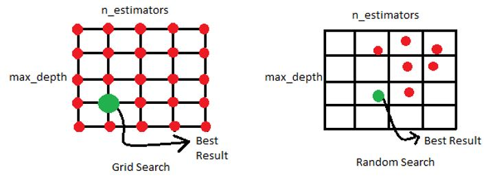

Optimización de Hiperparámetros¶
La gran flexibilidad de las redes neuronales es inconveniente porque hay muchos hiperparámetros que modificar y no se sabe con anticipación la mejor combinación de hiperparámetros.
La optimización de hiperparámetros (Hyperparameter tuning) es probar muchas combinaciones y evaluar cuál funciona mejor en el conjunto de test.
Una opción es probar manualmente con los hiperparámetros hasta encontrar la mejor combinación. Para hacerlo de forma automática porque este es un proceso que demanda mucho tiempo, tenemos varias opciones:
Con Scikit-Learn podemos usar
GridSearchCVoRandomizedSearchCV, específicamente en el módulosklearn.model_selection.Con Keras tenemos
keras_tuner.
Con estas herramientas solo indicamos con qué hiperparámetros experimentar y qué valores probar.
Se puede implementar la validación cruzada para evaluar todas las combinaciones posibles de valores de hiperparámetro.

Hyperparameter_tuning¶
Los principales hiperparámetros que se deben ajustar son los siguientes:
Número de neuronas por cada capa oculta:¶
La cantidad de neuronas en las capas de entrada y salida están determinadas por el tipo de entrada y salida que requiere el problema.
Solía ser común disminuir la cantidad de neuronas a medida que aumentaban las capas ocultas como si tuviera una forma piramidal; sin embargo, esta práctica se ha disminuido en su uso y parece que usar la misma cantidad de neuronas en todas las capas ocultas funciona igual de bien en la mayoría de los casos, o incluso mejor. Además, solo se ajustaría un solo hiperparámetro, en lugar de varios, uno por cada capa. Algunas veces puede ayudar hacer que la primera capa oculta sea más grande que las demás.
Al igual que la cantidad de capas ocultas, se puede intentar aumentar la cantidad de neuronas gradualmente hasta que la red comience a sobreajustarse.
A menudo es más simple y eficiente elegir un modelo con más capas y neuronas de las que realmente necesita, luego se usa la detención anticipada (early stopping) y otras técnicas de regularización para evitar el sobreajuste.
Optimizer:¶
El algoritmo por defecto en Keras de optimización de los parámetros es
"rmsprop", este tiene buenos resultados, pero podría pobar con
"adam" que ha tenido mayor recomendación.
Los demás optimizadores del método del Gradiente Descendente en Keras
son: "sgd", "adadelta", "adagrad", "adamax", "nadam"
y "ftrl".
Learning rate:¶
Encontrar una buena tasa de aprendizaje es muy importante. Si lo configura demasiado alto, el entrenamiento puede divergir. Si lo configura demasiado bajo, el entrenamiento eventualmente convergerá al óptimo, pero llevará mucho tiempo. Si lo configura un poco demasiado alto, progresará muy rápidamente al principio, pero terminará bailando alrededor del nivel óptimo, sin llegar a estabilizarse realmente.
Si comienza con una tasa de aprendizaje alta y luego la reduce una vez que el entrenamiento deja de progresar rápidamente, puede llegar a una buena solución más rápido que con la tasa de aprendizaje constante óptima. Hay muchas estrategias diferentes para reducir la tasa de aprendizaje durante el entrenamiento. También puede ser beneficioso comenzar con una tasa de aprendizaje baja, aumentarla y luego bajarla nuevamente. Estas estrategias se denominan programas de aprendizaje (Learning Rate Scheduling). En Keras es fácil configurar la estrategia con decaimiento exponencial. Con esta estrategia la tasa de aprendizaje se reduce gradualmente y de forma exponencial en cada paso.
La tasa de aprendizaje es posible que sea el hiperparámetro más importante. Una forma de encontrar una buena tasa de aprendizaje es entrenar el modelo durante unos pocos de cientos de iteraciones, comenzando con una tasa de aprendizaje muy baja (0,00001) y aumentando gradualmente hasta un valor muy grande (10).
La tasa de aprendizaje óptima depende de los otros hiperparámetros, especialmente del tamaño del lote, por lo que, si modifica algún hiperparámetro, asegúrese de actualizar también la tasa de aprendizaje.
Batch size:¶
El tamaño del lote puede tener un impacto significativo en el rendimiento y el tiempo de entrenamiento de su modelo.
Los tamaños de lote grandes a menudo conducen a inestabilidades en el entrenamiento, especialmente al comienzo del entrenamiento, y es posible que el modelo resultante no se generalice tan bien como un modelo entrenado con un tamaño de lote pequeño.
Una estrategia es tratar de usar un tamaño de lote grande y si el entrenamiento es inestable o el rendimiento final es decepcionante, intente usar un tamaño de lote pequeño en su lugar.
Keras tiene por defecto batch_size=32.
Función de Activación:¶
La función de activación que hasta el momento se reporta que tiene
mejores resultados es la "relu". Puede probar con las siguientes
opciones que tiene Keras: "sigmoid", "tanh", las variaciones de
la "relu" que son "elu" y "selu". Otras funciones de
activación no muy conocidas son "softsing", "softplus" y
"exponential."
Número de iteraciones:¶
En la mayoría de los casos, no es necesario ajustar el número de iteraciones o de epochs de entrenamiento: simplemente utilice la detención anticipada (early stopping) en su lugar.